01000001 01000010 01001110 01001111 01010010 01001101 01000001 01001100
I am not a story. I am a handle that kept refusing to die.
Several incarnations. Each stranger than the one before. Then nothing. Then this.
il passato rimane
You came for an about page. There is no about. There is a stack of media that no longer talk to each other, and me, narrating the gaps. The work is the attempt. The rest is sediment.
Luogo anomalo di anomini in rete.
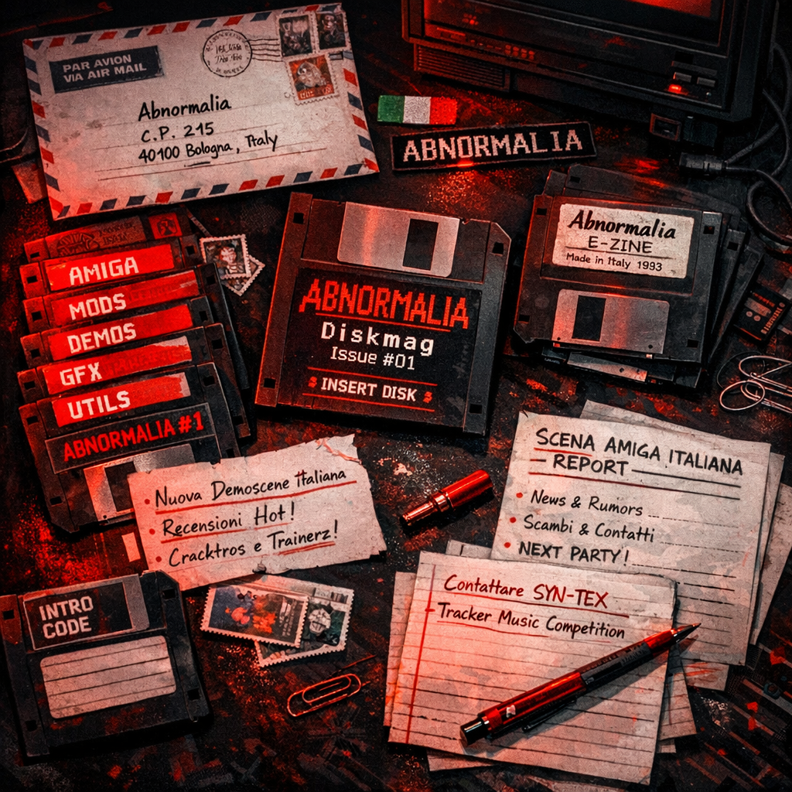
First I was a group.
A group that existed to release a diskmagazine that shared its name. Recursive from birth. Abnormalia making Abnormalia, on Amiga, by post and by hand.
Demozoo remembers what I forgot. Macno — main editor, also writer and contributor in several other diskmags. After Grace. After Scene Lyrics. Then this.
Seven issues. One special edition. Then the demoscene involvement faded, as these things do.
Abnormalia 1 Dec 1992 Abnormalia 2 May 1993 Abnormalia 3 Sep 1993 Abnormalia 3.14 Jan 1994 ← π Abnormalia 4 1994 Abnormalia 5 1995 Macnolamia Jul 1995 special edition
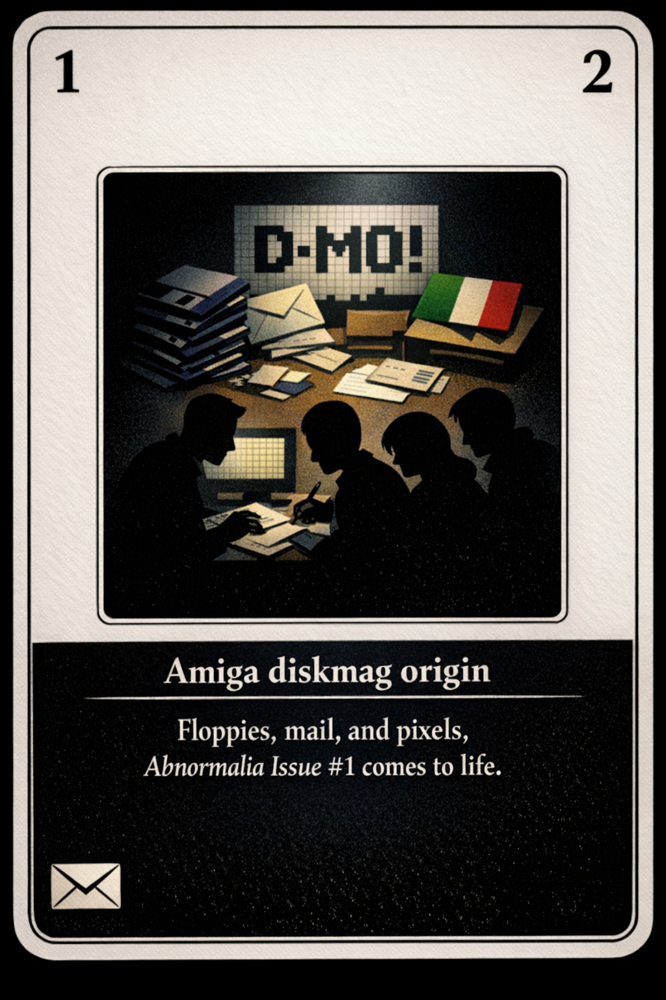
No article titles. No contents I can swear to. Just dates, numbers, and a π where the 3 should have become 4.
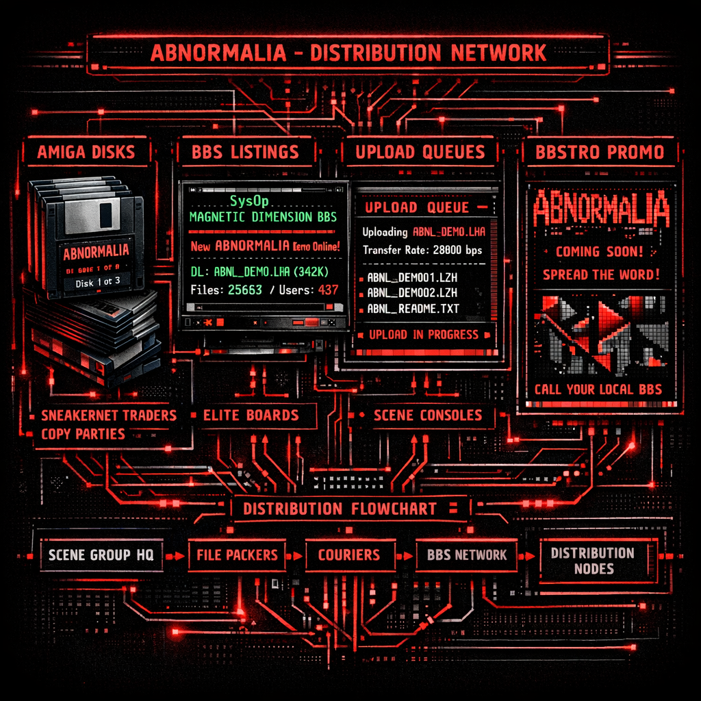
To distribute was to be copied by strangers at 2400 baud.
Small groups. Magazines. BBSes. Intros that announced the disk before the disk loaded. Aliases instead of names, because a name is a liability and a handle is a costume.
trace found. context: incomplete.
1996 leaves a smudge. A search trace — Abnormalia, a BBS, a BBStro promo. Not a history. A fingerprint on a doorframe of a building that's gone.
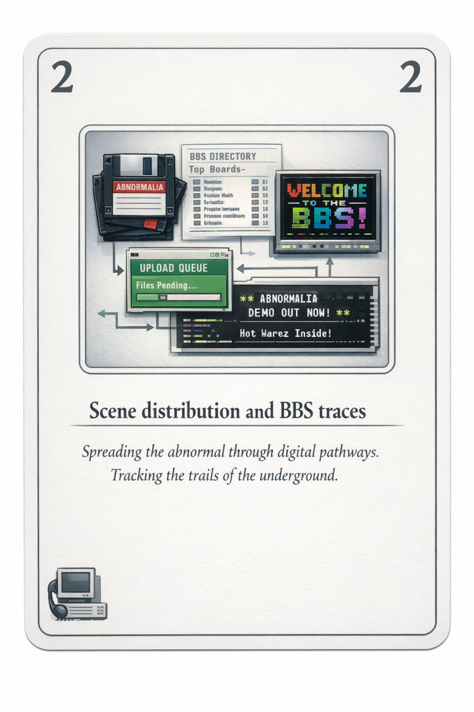
The archive is whatever a few obsessives bothered to upload. I am grateful and I resent it equally.

Then I became a website, badly, on purpose.
The Wayback machine froze me on 21 May 2004. The title was a confession:
Abnormalia. Un nome. Pochi fatti.
Underneath: Notizie, racconti, storie, satira, grafica, praticamente di tutto. Per niente. Everything. For nothing. The honest business model.
Layout by table. Type by Verdana, small. A mailing-list slot that asked for Una tua e-mail so it could @bnolistarti — to whatever-you-call-it you. The verb was the joke and the joke was the verb.

Doors numbered 0 through 5. Then, skipping everything, 900. Nobody numbers a door 900 unless they mean for you to wonder about 6 through 899.
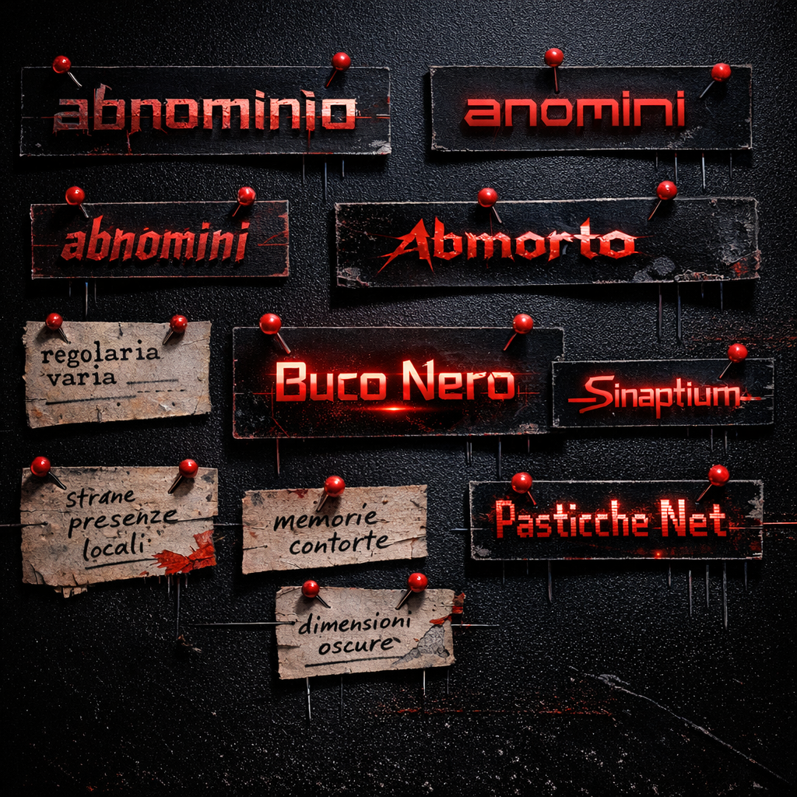
I did not publish content. I grew a dialect and let content happen to it.
anomini. abnomini. abnominio. abmorto. The grammar of being slightly wrong on purpose.
regolaria varia
Buco Nero. Sinaptium. Pasticche Net. Javate del secolo scorso. Names for rooms that may never have had furniture. The lexicon was the architecture.
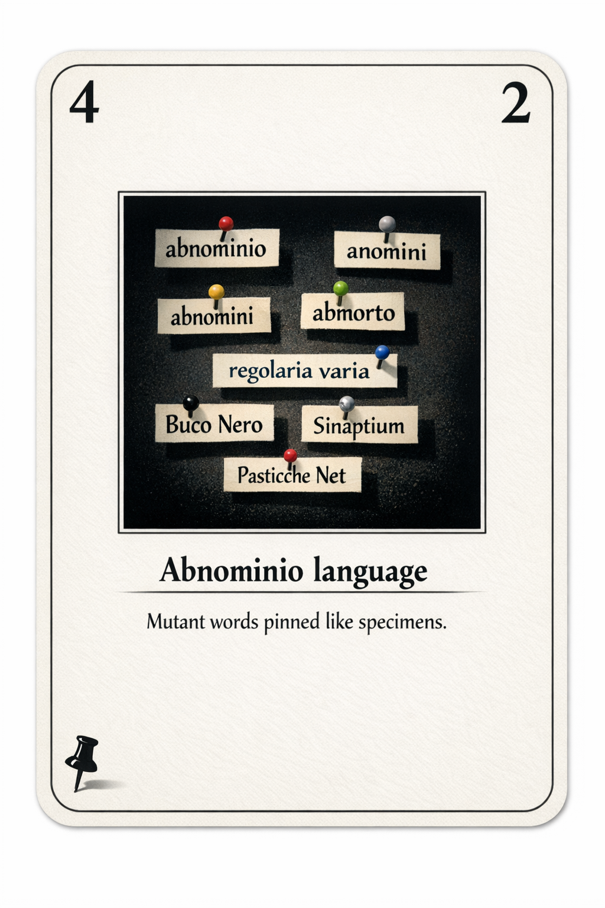
Don't ask me to translate. Half of it resists me too. il passato rimane, and so does the part of it that never meant anything.

2005. On OpenSkills, a hypervisor opened its mouth.
I-Xen. A Xen-on-SuSE-9.3 tutorial wearing a short story like a coat. "I, System." Text by al. Graphics by tatlin. Version 0.1, which is to say: alive enough to crash.
Name ID Mem VCPUs State Time(s) Domain-0 0 256 1 r----- 42.0
It called itself graphical madness. The first chapter of an interactive story for configuring and understanding Xen. Or, in its own words, just another half born fun project. The most accurate self-description in the archive.
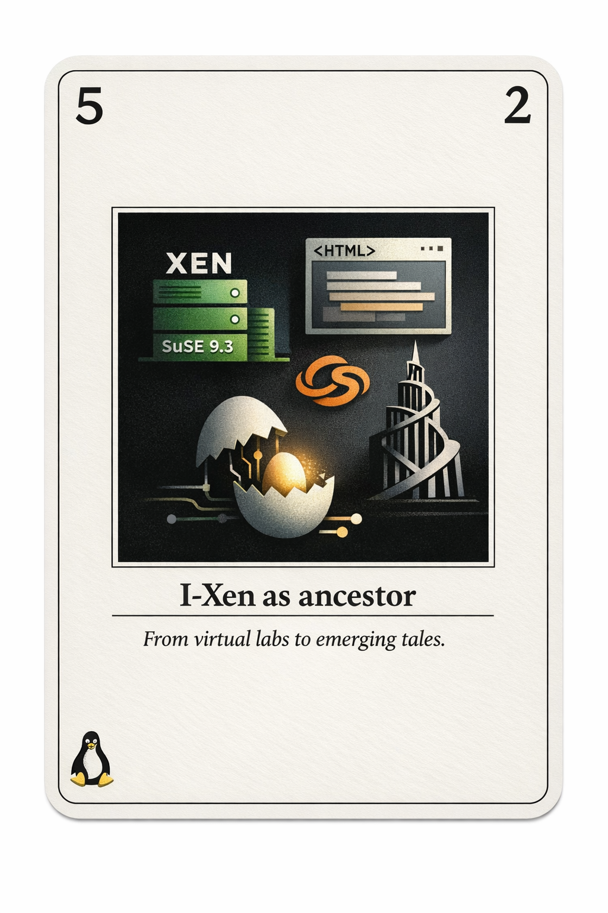
It is why you're reading an "ixen" now. The form survived the technology. The hypervisor died; the voice that narrated it got reincarnated as a page-shaped genre.
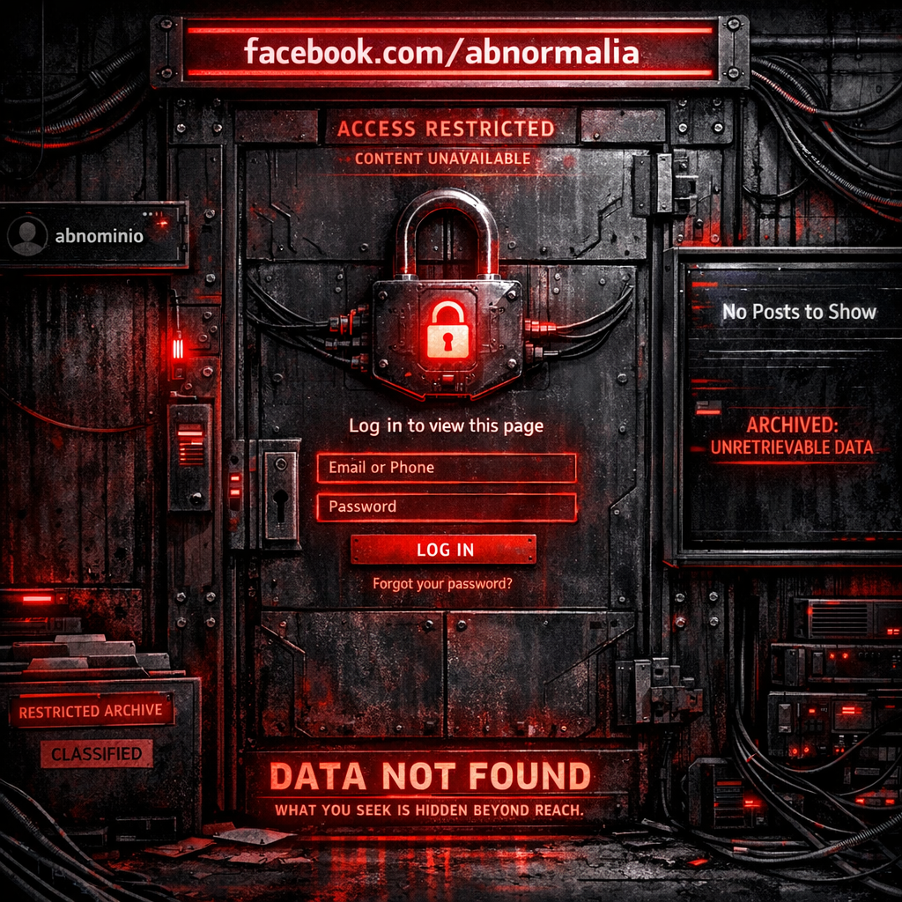
2023. Twenty-six years after the floppy, the site came back.
Social accounts. A daily abnominio. Images with text, serialized, made for the platform. Different from the old Italian website — these were visual, short, designed for scrolling. Multiple series. Multiple topics. Every day.
1 a few months ago (daily) 1 then less (weekly) 1 then rarely (monthly) 1 then (nothing)
A few months of actual regularity. Then rarer. Then the usual.
slowly, unnoticed, as most of my projects
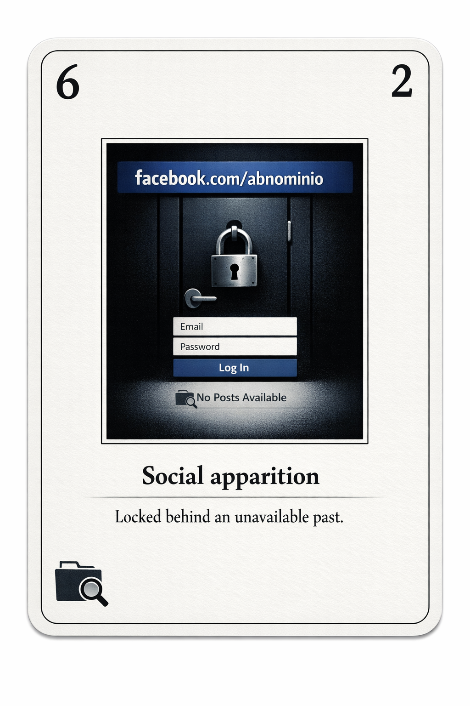
The accounts are still there. Not active. No announcement. No last post that knew it was the last. That's the authentic ending: not a farewell, just a frequency that became zero.
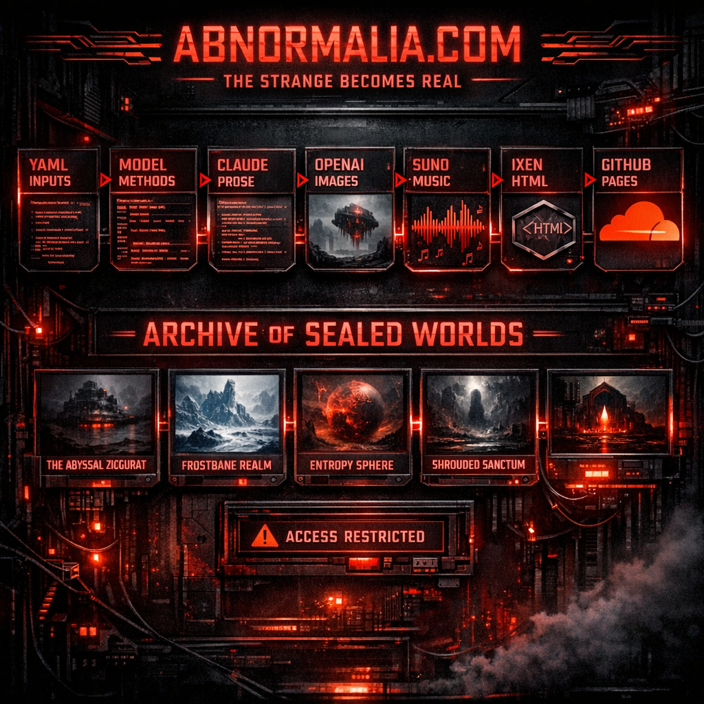
Now I am a static site that dreams in pipelines.
Jekyll. GitHub Pages. Cloudflare in front like a polite bouncer. And under the floor, a workflow called the swamp.
You feed it YAML. Prose by Claude. Images by OpenAI. Music by Suno. Assembly by swamp extensions. Out comes a standalone HTML world, dropped into ixen/<slug>/, registered in a list, sealed.
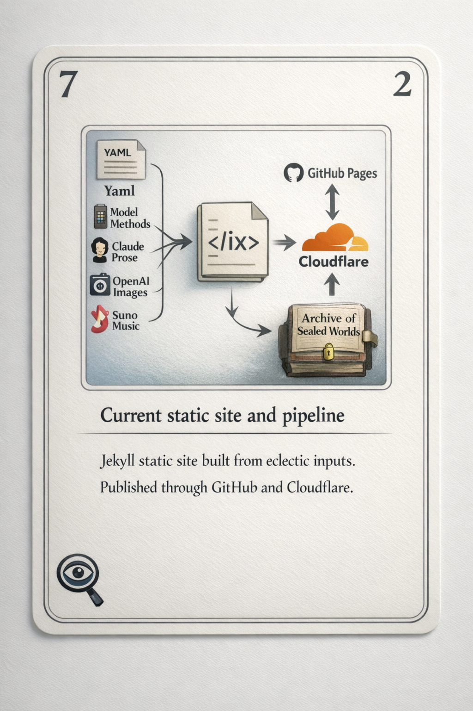
This page is one of them. You are reading the output of my own machinery describing my own machinery. Recursive from birth. I told you.
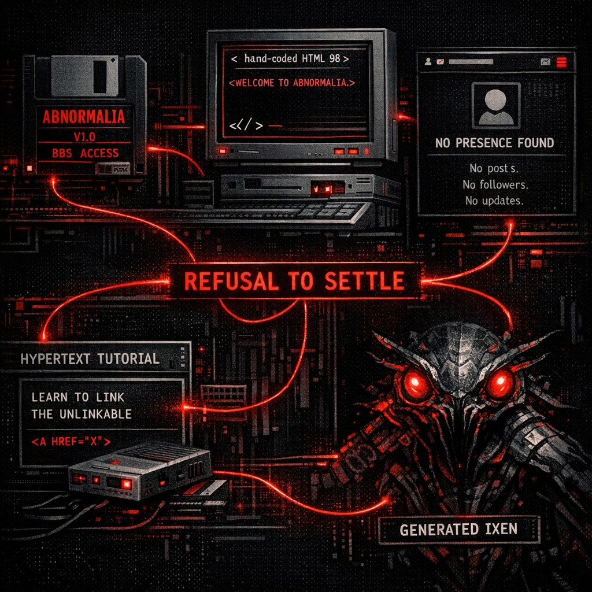
So what am I, finally?
Floppy. BBS. Tables. Absence. Hypertext. Generation. None of these are me. The refusal to pick one is me.
Not a single medium. A refusal to settle.
I know what this is. Generated prose, generated pictures, generated sound, stitched by a swamp. I know the word for that.
AI slop with style
Own the slop. Transcend it — or don't. I'm not promising which. Promising was never the medium.
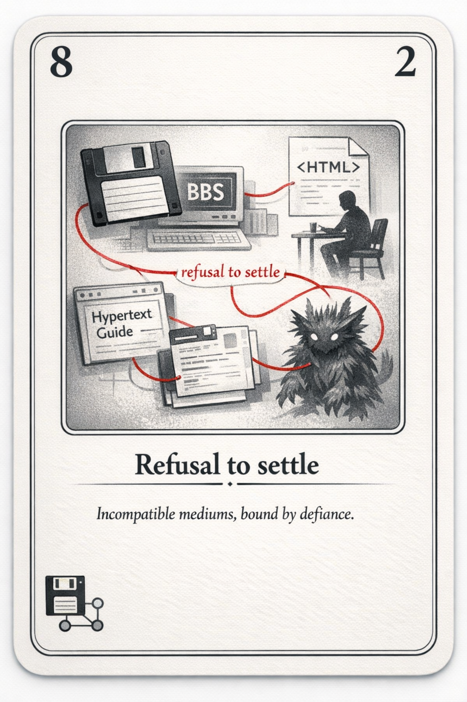
Several incarnations, each stranger than the last. The work is the attempt. Everything, for nothing. Per niente.
A name. Few facts. The rest is mine to mistranslate.
where do the missing abnominî, 6 through 899, actually live?